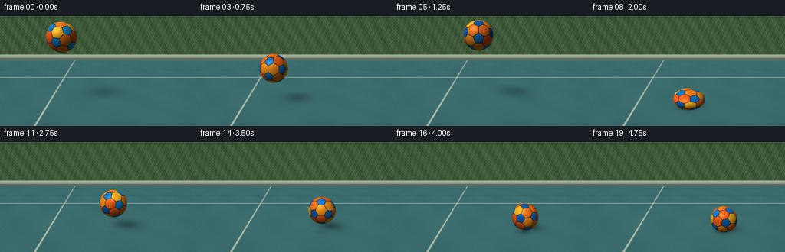
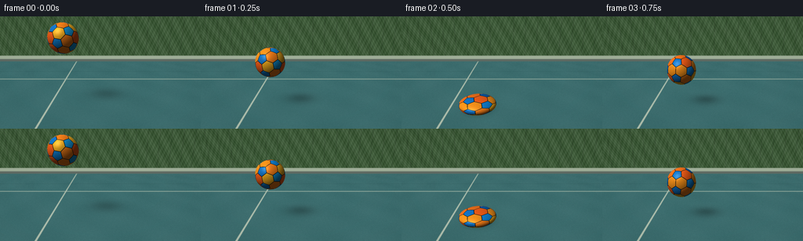

CODING AGENTS AS PIXEL WORLD MODELS
traex/GPT-6.1-Sol · phygen_029
点击播放 · 原生 RGB 像素
逐轮保存的候选
回放视频、检查图与代码变化。
每份候选均可单独播放。实际图片检查记录在下方工具轨迹中。
候选 01播放与检查图
点击播放 · 原生 RGB 像素


展开代码变化
--- 上一保存版本
+++ 本次保存版本
@@ -0,0 +1,188 @@
+"""Procedural RGB renderer: illuminated rubber soccer ball / elastic impacts.
+Only numpy, Pillow, and the local artifact writer are used.
+"""
+from pathlib import Path
+import math
+import numpy as np
+from PIL import Image, ImageDraw, ImageFilter
+from artifact_io import save
+
+ROOT = Path(__file__).resolve().parent
+W, H, S = 256, 144, 3
+WW, HH = W*S, H*S
+R = .48
+
+def unit(v):
+ a=np.asarray(v, dtype=float)
+ return a/np.linalg.norm(a,axis=-1,keepdims=True)
+
+# Construct the exact face planes of a truncated icosahedron. Their spherical
+# projection gives twelve pentagonal and twenty hexagonal stitched panels.
+p=(1+5**.5)/2
+verts=[]
+for a in [-1,1]:
+ for b in [-p,p]:
+ verts.extend([[0,a,b],[a,b,0],[b,0,a]])
+verts=unit(verts)
+d=np.linalg.norm(verts[:,None]-verts[None,:],axis=-1)
+edges=(d>0.01)&(d<1.06)
+tri=[]
+for i in range(12):
+ for j in range(i+1,12):
+ for k in range(j+1,12):
+ if edges[i,j] and edges[j,k] and edges[i,k]: tri.append((i,j,k))
+normals=[]; distances=[]
+for i in range(12):
+ j=np.flatnonzero(edges[i])[0]
+ q=(2*verts[i]+verts[j])/3
+ normals.append(verts[i]); distances.append(np.dot(q,verts[i]))
+for i,j,k in tri:
+ n=unit(verts[i]+verts[j]+verts[k]); q=(2*verts[i]+verts[j])/3
+ normals.append(n); distances.append(np.dot(q,n))
+normals=np.asarray(normals); distances=np.asarray(distances)
+coef=normals/distances[:,None]
+colors=np.array([[20,117,200],[16,132,217],[12,95,177],[22,151,219]]*3+[[249,96,25],[253,131,26],[253,180,32],[244,113,25],[249,147,27]]*4,dtype=float)/255
+
+cam=np.array([0,-5.2,3.0]); target=np.array([0,0,1.45])
+fwd=unit(target-cam); right=unit(np.cross(fwd,[0,0,1])); up=np.cross(right,fwd)
+YY,XX=np.mgrid[0:HH,0:WW]
+u=(XX+.5-WW/2)/(215*S); v=-(YY+.5-HH/2)/(215*S)
+rays=unit(fwd+u[...,None]*right+v[...,None]*up)
+# Geometry of a painted hard court.
+tground=np.divide(-cam[2],rays[...,2],out=np.full((HH,WW),1e6),where=rays[...,2]<-1e-5)
+ground=cam+rays*tground[...,None]
+gx,gy=ground[...,0],ground[...,1]
+valid=(tground>0)&(gy<8)
+light=unit([-0.48,-0.50,.86])
+rng=np.random.default_rng(42)
+noise=rng.normal(0,1,(HH,WW))
+# Ground grain and subtle green-blue color variation.
+fleck=(np.sin(gx*135+np.sin(gy*54))*np.sin(gy*161+np.sin(gx*63)))
+slow=np.sin(gx*2.6+gy*.7)*np.sin(gy*1.6)
+grain=noise*.012+fleck*.009+slow*.009
+floor=np.zeros((HH,WW,3))+[.24,.43,.435]
+floor+=grain[...,None]
+# Thin white touchline, plus a painted distant end line.
+line=(np.abs(gx+1.9)<.033) | (np.abs(gy-3.6)<.042)
+line_strength=line*.74
+floor=floor*(1-line_strength[...,None])+np.array([.87,.88,.78])*line_strength[...,None]
+# A subtle seam at the boundary of the sports surface.
+seam=np.exp(-((gy-5.1)/.028)**2)*.18
+floor*=1-seam[...,None]
+# Background wall / hedge seen past the court, softly out of focus.
+tback=(8-cam[1])/rays[...,1]
+bp=cam+rays*tback[...,None]
+bx,bz=bp[...,0],bp[...,2]
+back=np.zeros_like(floor)
+back[:]=[.63,.69,.60]
+leaves=(np.sin(bx*6+bz*4)+np.sin(bx*18-bz*7)+np.sin(bx*31+bz*22))*.024
+hedge=bz>.47
+back[hedge]=np.stack([.25+leaves,.36+leaves,.23+leaves],axis=-1)[hedge]
+# Muted mesh fencing above a low retaining curb.
+fence=(np.abs(np.sin(bx*3.5))<.032)&(bz>.48)
+back[fence]*=.65
+crosswire=np.abs(np.sin((bx+bz)*13)*np.sin((bx-bz)*13))<.018
+back[crosswire & (bz>.5)]*=.89
+sky=bz>3.6
+back[sky]=np.array([.72,.82,.84])
+back[bz<.20]=[.38,.42,.39]
+base=np.where(valid[...,None],floor,back)
+base=np.asarray(Image.fromarray(np.uint8(np.clip(base,0,1)*255)).filter(ImageFilter.GaussianBlur(.32*S)),dtype=float)/255
+
+# Contact dates chosen to be legible at four frames per second, while still
+# conserving the parabola and reducing energy on each later impact.
+impacts=[.5,2.,3.,3.75,4.15]
+releases=[.55,2.10,3.125,3.825]
+vels=[5.8,3.6,2.5,1.3]
+
+def pose(t):
+ squash=0.
+ if t<.5:
+ h=2.05-2.1*t-4*t*t
+ else:
+ h=0.
+ for i,hit in enumerate(impacts[:-1]):
+ rel=releases[i]
+ end=impacts[i+1]
+ if hit<=t<rel:
+ # A compressed dwell is deliberately visible at exact impact.
+ squash=[.46,.30,.20,.10][i]*(1-((t-hit)/(rel-hit))**1.4)
+ break
+ if rel<=t<end:
+ tau=t-rel
+ h=max(0,vels[i]*tau-4*tau*tau)
+ # A brief elastic stretch just after takeoff.
+ squash=-.12*np.exp(-tau*8)
+ break
+ if t>=4.15:
+ h=0; squash=.035*np.exp(-(t-4.15)*8)*np.cos((t-4.15)*26)
+ # Rolling translation slows when resting; no discontinuous teleports.
+ x=-1.15+.61*t if t<3.75 else 1.1375+.24*(1-np.exp(-(t-3.75)*2.4))
+ y=.12+.055*t
+ rz=R*(1-squash)
+ rx=R/(1-squash)**.5
+ return np.array([x,y,rz+h]), np.array([rx,rx,rz]),h
+
+def rot(t):
+ a=.45+2.1*t; b=.35+.20*t; c=.3
+ rx=np.array([[1,0,0],[0,np.cos(a),-np.sin(a)],[0,np.sin(a),np.cos(a)]])
+ rz=np.array([[np.cos(b),-np.sin(b),0],[np.sin(b),np.cos(b),0],[0,0,1]])
+ ry=np.array([[np.cos(c),0,np.sin(c)],[0,1,0],[-np.sin(c),0,np.cos(c)]])
+ return rz@rx@ry
+
+def render(t):
+ center,scale,height=pose(t)
+ img=base.copy()
+ # Soft area-light shadow cast onto the actual perspective floor.
+ sx=center[0]-light[0]/light[2]*center[2]
+ sy=center[1]-light[1]/light[2]*center[2]
+ sw=.36+center[2]*.21
+ sh=.31+center[2]*.17
+ shadow=np.exp(-(((gx-sx)/sw)**2+((gy-sy)/sh)**2)*1.6)*(.38/(1+height*.44))
+ contact=np.exp(-(((gx-center[0])/(scale[0]*.77))**2+((gy-center[1])/(scale[1]*.64))**2)*2)*(.43*np.exp(-height*4))
+ img*=1-(np.maximum(shadow,contact)*valid)[...,None]
+ # Ray / ellipsoid intersection, for true outline changes at compression.
+ o=(cam-center)/scale
+ dr=rays/scale
+ A=np.sum(dr*dr,axis=-1); B=2*np.sum(dr*o,axis=-1); C=np.dot(o,o)-1
+ disc=B*B-4*A*C
+ hit=disc>0
+ td=(-B-np.sqrt(np.maximum(disc,0)))/(2*A)
+ hit &= (td>0)&(td<tground)
+ pos=cam+rays[hit]*td[hit,None]
+ surf=(pos-center)/scale
+ n=unit(surf/scale)
+ local=surf@rot(t)
+ scores=local@coef.T
+ idx=np.argmax(scores,axis=1)
+ second=np.argpartition(scores,-2,axis=1)[:,-2]
+ gap=scores[np.arange(len(idx)),idx]-scores[np.arange(len(idx)),second]
+ angular=gap/np.linalg.norm(coef[idx]-coef[second],axis=1)
+ col=colors[idx].copy()
+ # Narrow recessed seams, colored panel edge, and rubber stipple.
+ seams=np.clip((.017-angular)/.008,0,1)
+ edge=np.clip((.028-angular)/.010,0,1)
+ col*=1-.15*edge[:,None]
+ col=col*(1-seams[:,None])+np.array([.035,.070,.087])*seams[:,None]
+ micro=np.sin(local[:,0]*220+np.sin(local[:,2]*117))*np.sin(local[:,1]*227+local[:,2]*55)
+ col*=1+micro[:,None]*.035
+ diffuse=np.maximum(n@light,0)
+ # Low ground bounce and cool outdoor fill preserve the spherical form.
+ shade=.32+.69*diffuse+.035*n[:,2]
+ col*=shade[:,None]
+ view=unit(cam-pos); half=unit(view+light)
+ spec=np.maximum(np.sum(n*half,axis=1),0)**36
+ col+=spec[:,None]*.20*np.array([1,.93,.81])
+ grazing=(1-np.maximum(np.sum(n*view,axis=1),0))**4
+ col+=grazing[:,None]*np.array([.035,.05,.06])
+ img[hit]=col
+ # Gentle optical corner falloff, no added captions or graphic overlays.
+ vig=1-.085*((XX/WW-.5)**2+(YY/HH-.5)**2)
+ img*=vig[...,None]
+ image=Image.fromarray(np.uint8(np.clip(img,0,1)*255))
+ return np.asarray(image.resize((W,H),Image.Resampling.LANCZOS))
+
+if __name__=='__main__':
+ frames=np.stack([render(i/4) for i in range(20)])
+ save(frames,ROOT)
+ print('Saved',frames.shape,frames.dtype)
可观测工具轨迹
实际执行的命令与返回图片。
命令 1exit 0
/bin/bash -lc 'ls -la && cat prompt.txt && cat GENERATION_RULES.md && cat task_spec.json'
命令 2exit 0
/bin/bash -lc "cat artifact_io.py && python - <<'PY'
import numpy, PIL
print('numpy',numpy.__version__)
PY"命令 3exit 0
/bin/bash -lc "cat > generate.py <<'PY'
\"\"\"Procedural RGB renderer: illuminated rubber soccer ball / elastic impacts.
Only numpy, Pillow, and the local artifact writer are used.
\"\"\"
from pathlib import Path
import math
import numpy as np
from PIL import Image, ImageDraw, ImageFilter
from artifact_io import save
ROOT = Path(__file__).resolve().parent
W, H, S = 256, 144, 3
WW, HH = W*S, H*S
R = .48
def unit(v):
a=np.asarray(v, dtype=float)
return a/np.linalg.norm(a,axis=-1,keepdims=True)
# Construct the exact face planes of a truncated icosahedron. Their spherical
# projection gives twelve pentagonal and twenty hexagonal stitched panels.
p=(1+5**.5)/2
verts=[]
for a in [-1,1]:
for b in [-p,p]:
verts.extend([[0,a,b],[a,b,0],[b,0,a]])
verts=unit(verts)
d=np.linalg.norm(verts[:,None]-verts[None,:],axis=-1)
edges=(d>0.01)&(d<1.06)
tri=[]
for i in range(12):
for j in range(i+1,12):
for k in range(j+1,12):
if edges[i,j] and edges[j,k] and edges[i,k]: tri.append((i,j,k))
normals=[]; distances=[]
for i in range(12):
j=np.flatnonzero(edges[i])[0]
q=(2*verts[i]+verts[j])/3
normals.append(verts[i]); distances.append(np.dot(q,verts[i]))
for i,j,k in tri:
n=unit(verts[i]+verts[j]+verts[k]); q=(2*verts[i]+verts[j])/3
normals.append(n); distances.append(np.dot(q,n))
normals=np.asarray(normals); distances=np.asarray(distances)
coef=normals/distances[:,None]
colors=np.array([[20,117,200],[16,132,217],[12,95,177],[22,151,219]]*3+[[249,96,25],[253,131,26],[253,180,32],[244,113,25],[249,147,27]]*4,dtype=float)/255
cam=np.array([0,-5.2,3.0]); target=np.array([0,0,1.45])
fwd=unit(target-cam); right=unit(np.cross(fwd,[0,0,1])); up=np.cross(right,fwd)
YY,XX=np.mgrid[0:HH,0:WW]
u=(XX+.5-WW/2)/(215*S); v=-(YY+.5-HH/2)/(215*S)
rays=unit(fwd+u[...,None]*right+v[...,None]*up)
# Geometry of a painted hard court.
tground=np.divide(-cam[2],rays[...,2],out=np.full((HH,WW),1e6),where=rays[...,2]<-1e-5)
ground=cam+rays*tground[...,None]
gx,gy=ground[...,0],ground[...,1]
valid=(tground>0)&(gy<8)
light=unit([-0.48,-0.50,.86])
rng=np.random.default_rng(42)
noise=rng.normal(0,1,(HH,WW))
# Ground grain and subtle green-blue color variation.
fleck=(np.sin(gx*135+np.sin(gy*54))*np.sin(gy*161+np.sin(gx*63)))
slow=np.sin(gx*2.6+gy*.7)*np.sin(gy*1.6)
grain=noise*.012+fleck*.009+slow*.009
floor=np.zeros((HH,WW,3))+[.24,.43,.435]
floor+=grain[...,None]
# Thin white touchline, plus a painted distant end line.
line=(np.abs(gx+1.9)<.033) | (np.abs(gy-3.6)<.042)
line_strength=line*.74
floor=floor*(1-line_strength[...,None])+np.array([.87,.88,.78])*line_strength[...,None]
# A subtle seam at the boundary of the sports surface.
seam=np.exp(-((gy-5.1)/.028)**2)*.18
floor*=1-seam[...,None]
# Background wall / hedge seen past the court, softly out of focus.
tback=(8-cam[1])/rays[...,1]
bp=cam+rays*tback[...,None]
bx,bz=bp[...,0],bp[...,2]
back=np.zeros_like(floor)
back[:]=[.63,.69,.60]
leaves=(np.sin(bx*6+bz*4)+np.sin(bx*18-bz*7)+np.sin(bx*31+bz*22))*.024
hedge=bz>.47
back[hedge]=np.stack([.25+leaves,.36+leaves,.23+leaves],axis=-1)[hedge]
# Muted mesh fencing above a low retaining curb.
fence=(np.abs(np.sin(bx*3.5))<.032)&(bz>.48)
back[fence]*=.65
crosswire=np.abs(np.sin((bx+bz)*13)*np.sin((bx-bz)*13))<.018
back[crosswire & (bz>.5)]*=.89
sky=bz>3.6
back[sky]=np.array([.72,.82,.84])
back[bz<.20]=[.38,.42,.39]
base=np.where(valid[...,None],floor,back)
base=np.asarray(Image.fromarray(np.uint8(np.clip(base,0,1)*255)).filter(ImageFilter.GaussianBlur(.32*S)),dtype=float)/255
# Contact dates chosen to be legible at four frames per second, while still
# conserving the parabola and reducing energy on each later impact.
impacts=[.5,2.,3.,3.75,4.15]
releases=[.55,2.10,3.125,3.825]
vels=[5.8,3.6,2.5,1.3]
def pose(t):
squash=0.
if t<.5:
h=2.05-2.1*t-4*t*t
else:
h=0.
for i,hit in enumerate(impacts[:-1]):
rel=releases[i]
end=impacts[i+1]
if hit<=t<rel:
# A compressed dwell is deliberately visible at exact impact.
squash=[.46,.30,.20,.10][i]*(1-((t-hit)/(rel-hit))**1.4)
break
if rel<=t<end:
tau=t-rel
h=max(0,vels[i]*tau-4*tau*tau)
# A brief elastic stretch just after takeoff.
squash=-.12*np.exp(-tau*8)
break
if t>=4.15:
h=0; squash=.035*np.exp(-(t-4.15)*8)*np.cos((t-4.15)*26)
# Rolling translation slows when resting; no discontinuous teleports.
x=-1.15+.61*t if t<3.75 else 1.1375+.24*(1-np.exp(-(t-3.75)*2.4))
y=.12+.055*t
rz=R*(1-squash)
rx=R/(1-squash)**.5
return np.array([x,y,rz+h]), np.array([rx,rx,rz]),h
def rot(t):
a=.45+2.1*t; b=.35+.20*t; c=.3
rx=np.array([[1,0,0],[0,np.cos(a),-np.sin(a)],[0,np.sin(a),np.cos(a)]])
rz=np.array([[np.cos(b),-np.sin(b),0],[np.sin(b),np.cos(b),0],[0,0,1]])
ry=np.array([[np.cos(c),0,np.sin(c)],[0,1,0],[-np.sin(c),0,np.cos(c)]])
return rz@rx@ry
def render(t):
center,scale,height=pose(t)
img=base.copy()
# Soft area-light shadow cast onto the actual perspective floor.
sx=center[0]-light[0]/light[2]*center[2]
sy=center[1]-light[1]/light[2]*center[2]
sw=.36+center[2]*.21
sh=.31+center[2]*.17
shadow=np.exp(-(((gx-sx)/sw)**2+((gy-sy)/sh)**2)*1.6)*(.38/(1+height*.44))
contact=np.exp(-(((gx-center[0])/(scale[0]*.77))**2+((gy-center[1])/(scale[1]*.64))**2)*2)*(.43*np.exp(-height*4))
img*=1-(np.maximum(shadow,contact)*valid)[...,None]
# Ray / ellipsoid intersection, for true outline changes at compression.
o=(cam-center)/scale
dr=rays/scale
A=np.sum(dr*dr,axis=-1); B=2*np.sum(dr*o,axis=-1); C=np.dot(o,o)-1
disc=B*B-4*A*C
hit=disc>0
td=(-B-np.sqrt(np.maximum(disc,0)))/(2*A)
hit &= (td>0)&(td<tground)
pos=cam+rays[hit]*td[hit,None]
surf=(pos-center)/scale
n=unit(surf/scale)
local=surf@rot(t)
scores=local@coef.T
idx=np.argmax(scores,axis=1)
second=np.argpartition(scores,-2,axis=1)[:,-2]
gap=scores[np.arange(len(idx)),idx]-scores[np.arange(len(idx)),second]
angular=gap/np.linalg.norm(coef[idx]-coef[second],axis=1)
col=colors[idx].copy()
# Narrow recessed seams, colored panel edge, and rubber stipple.
seams=np.clip((.017-angular)/.008,0,1)
edge=np.clip((.028-angular)/.010,0,1)
col*=1-.15*edge[:,None]
col=col*(1-seams[:,None])+np.array([.035,.070,.087])*seams[:,None]
micro=np.sin(local[:,0]*220+np.sin(local[:,2]*117))*np.sin(local[:,1]*227+local[:,2]*55)
col*=1+micro[:,None]*.035
diffuse=np.maximum(n@light,0)
# Low ground bounce and cool outdoor fill preserve the spherical form.
shade=.32+.69*diffuse+.035*n[:,2]
col*=shade[:,None]
view=unit(cam-pos); half=unit(view+light)
spec=np.maximum(np.sum(n*half,axis=1),0)**36
col+=spec[:,None]*.20*np.array([1,.93,.81])
grazing=(1-np.maximum(np.sum(n*view,axis=1),0))**4
col+=grazing[:,None]*np.array([.035,.05,.06])
img[hit]=col
# Gentle optical corner falloff, no added captions or graphic overlays.
vig=1-.085*((XX/WW-.5)**2+(YY/HH-.5)**2)
img*=vig[...,None]
image=Image.fromarray(np.uint8(np.clip(img,0,1)*255))
return np.asarray(image.resize((W,H),Image.Resampling.LANCZOS))
if __name__=='__main__':
frames=np.stack([render(i/4) for i in range(20)])
save(frames,ROOT)
print('Saved',frames.shape,frames.dtype)
PY
python generate.py"命令 4exit 0
/bin/bash -lc "python - <<'PY'
from pathlib import Path
import numpy as np
from PIL import Image
root=Path('.')
a=np.load('pixels.npz')['pixels']
assert a.shape==(144,256,20)
assert len(list(root.joinpath('frames').glob('*.png')))==20
assert all(Image.open(root/'frames'/f'{i:02d}.png').mode=='RGB' for i in range(20))
assert (root/'index.html').is_file()
print('Validated: 20 RGB frames, 256Ã144; pixels.npz and index.html exist.')
PY"保存候选 1 份；完成命令 4 次；可验证图片返回 0 张。原始 API 响应与完整日志保留在本地。